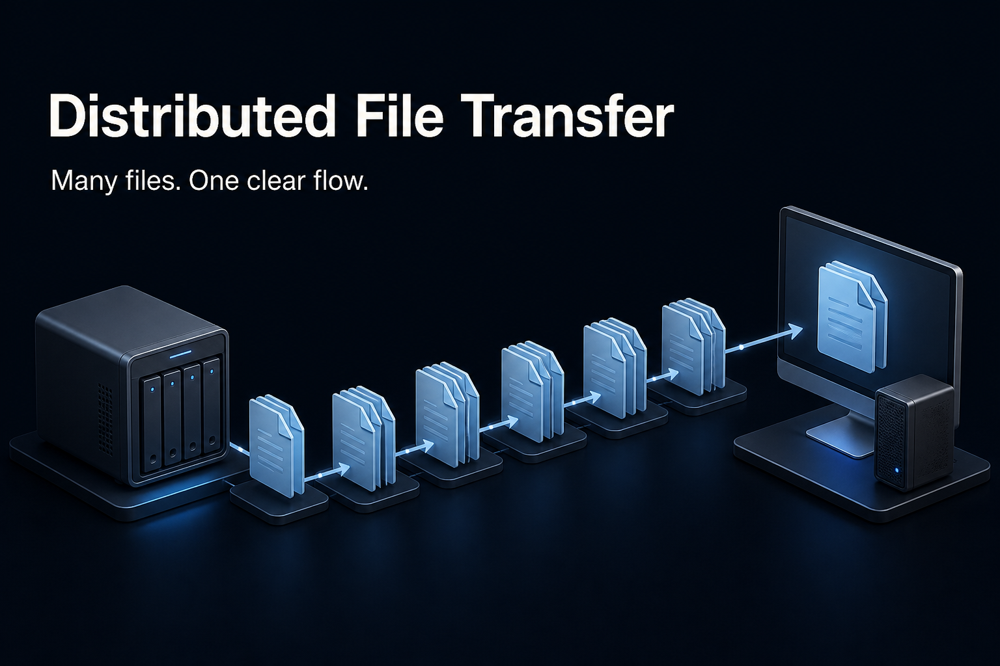
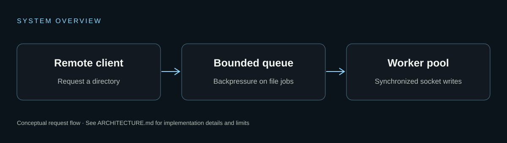

Concurrent clients
Communication threads accept directory requests while workers process file-transfer jobs.
Systems programming · C++ · POSIX
A multithreaded TCP client/server that transfers directory trees with a bounded worker queue and per-socket synchronization.

What the code demonstrates
Communication threads accept directory requests while workers process file-transfer jobs.
Mutexes and condition variables coordinate producers and consumers.
The client reconstructs the transferred folder hierarchy from file metadata and content.
Under the hood

A client connects over TCP and supplies the directory to retrieve.
A communication thread walks the tree and submits each file to the worker queue.
Worker threads send files; a per-socket mutex prevents interleaved writes.
From repository to local environment
Clone the repository, read the prerequisites, then run the project-specific checks. The command below is a starting point, not the complete installation.
git clone https://github.com/mayank-vekariya/Distributed-File-Storage-System.git cd Distributed-File-Storage-System make all
Scope and honesty
Know what you are running. An educational file-transfer system, not a replicated storage cluster. Use only on localhost or a trusted private network: the protocol has no TLS or authentication, and received files can overwrite local files.